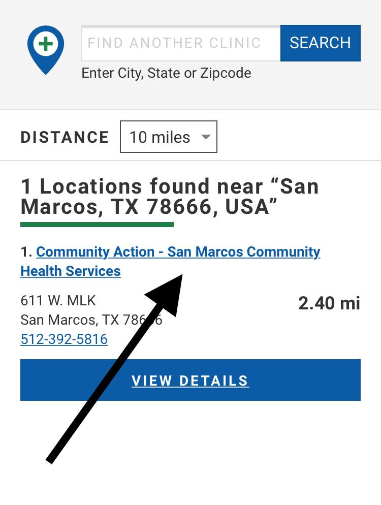
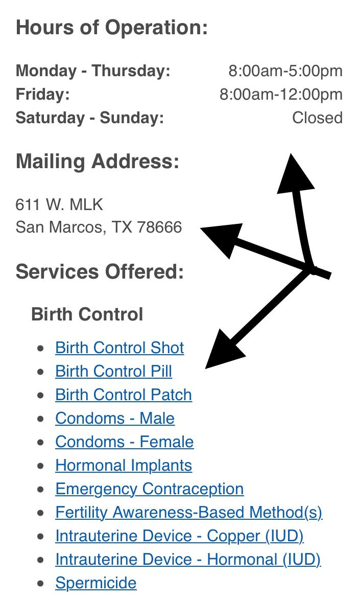

Getting Birth Control May Be Easier Than You Think!
por
Talking to parents or guardians about birth control can be really intimidating, and if you’re wondering what you should do — you’re not alone!
You may be looking into birth control because you’re thinking about becoming — or already are — sexually active in ways where pregnancy is a risk. Or, you might be looking into methods of contraception to address health issues, like painful periods.
Hopefully, the primary people in your life are supportive of your interest in birth control, especially if you’re a minor or otherwise don’t have full legal rights. But sometimes using birth control, for whatever our reason, is not something our parents or guardians support.
You should be trusted to make these decisions, and you deserve access to the resources you need. And while some teens can and do involve their parents, as Scarleteen has pointed out before, those who don’t often aren't for good reasons.
If you know birth control is right for you but can’t — or just don’t want to — involve your parents or guardians, accessing methods may be easier than you think! I want to help you learn how.
Your support network
Confiding in others with private information — like whether you’re sexually active or thinking of starting a method of birth control — is a decision that is entirely yours to make. You don’t have to involve anyone other than medical professionals in this if you don’t want to. But if there’s a supportive person in your life who you trust (like a partner, friend, or family member), and who you know will respect your privacy, sometimes involving them can lessen the burden you may experience through the process. They may be able to help you with transportation, money, or just by providing a shoulder to lean on.
Accessing birth control as a minor in the United States
For some, involving our parents or guardians can prevent us from accessing the healthcare we need entirely. Others may not have a way to involve them even if they would provide support and help. The good news is that certain clinics in the U.S. will allow you to access birth control without parental consent or notification and for free.
Family planning clinics participating in the federal grant program Title X (pronounced Title Ten) are required to provide services to legal minors regardless of age, citizenship, or any other socioeconomic status. Those services — which include birth control, pregnancy testing, breast and cervical screenings for cancer, and STD/STI testing and treatment — are confidential, which means they won’t contact your parents, and you don’t need their permission to access them. These clinics can also provide some degree of pregnancy options counseling, but keep in mind that under current law, they aren’t allowed to talk to you about abortion.
HK Gray, a storyteller with the National Network for Abortion Fund’s Youth Testify leadership program and Advocates for Youth’s 1 in 3 campaign, told Scarleteen that:
Even though I was already making independent reproductive decisions when I became a teen mom, I wasn't allowed to get birth control from my OB/GYN without parental consent. I didn't know about Title X clinics where I could have gotten birth control as a minor. And since my dad was experiencing homelessness and my mom was on the run from the law, it wasn’t an option for me to involve them.”
Contraception options
Title X clinics provide the full range of safe, available and effective birth control options, including long acting reversible contraception methods (LARCs) — like IUDs (such as Mirena or Paragard) and the implant (Nexplanon). These options can last for years, and can be good methods if you want a form of birth control that’s both highly effective and easily concealable. LARCs have a 99% success rate.
Title X clinics also provide other options like contraceptive pills, the Depo-provera shot, the patch, Nuvaring, and emergency contraception. To learn more about the birth control options available, check out the Birth Control Bingo guide Scarleteen provides! You can talk to Scarleteen staff in our direct services if you want more personal help, or you can determine which method or methods may be right for you with the staff at the clinic.
How much will it cost?
For most young people, it won’t cost anything: both your visit and your birth control will be completely free. When you call to make an appointment, you’ll be screened for financial assistance, which is determined by how much money you make or have, not how much your parents do. If you’re not working, you just say you don’t have an income! And even if you are working, it can still be low cost or free. If you have insurance, you don’t need to provide them with that information if you don’t want to, for any reason; and it can be a better option for maintaining your privacy, too, since no insurance claims will be submitted on your behalf.
How to make an appointment at a Title X clinic
Finding a clinic:
You can use this search tool to find your nearest Title X clinic. On the results page, you can change the distance on the drop down bar to view more options that may be further away, in case there aren’t any clinics nearby. If you need assistance getting to the clinic, this may be a time where a supportive friend or family member in your life can help. There may be a bus route available, too!
Make sure to click on the clinic name and view the birth control options they provide, as there are a few clinics who may not provide what you’re looking for. You’ll also be able to view their hours of operation.
What do I say?
Wondering how to make an appointment? It’s easy! You just need to call and say something like:
“Hi,I need to make an appointment for birth control without my parents finding out, and I can’t pay for it myself.”
This is when the clinic will screen you for financial assistance, and they’ll also ask you for some personal information, like a home address and phone number.
Remind them not to send any mail to the address you give them. If you’re still concerned about your parents finding out even if they don’t, you can also provide the address of someone else you know. 
What do I bring?
All you need to bring with you is a form of identification if you have one, but you won’t be turned away if you don’t! You also won’t be asked to provide any kind of proof of income.
What if I can’t access a Title X clinic?
People under the age of 18 in the United States who have Medicaid, with the exception of CHIP, can access birth control at any clinic that provides it. But if privacy is a concern, this may not be the best option since services can show up on insurance claims which your parents may have access to.
You can also likely access birth control at any Planned Parenthood health center if you’re 16-17 years old; supporting yourself, and live apart from your parent or guardian. Planned Parenthood can provide condoms as well as pregnancy and STI testing at any age.
What if I can’t access any clinic?
Emergency contraception pills (Plan B, My Way, Next Choice) and condoms can be bought online and in grocery stores and pharmacies! It’s over the counter, so you don’t need a prescription — and you can buy Plan B at any age in the U.S.! There is no age restriction on condoms, either. Most pharmacies also carry contraceptive sponges and spermicides, which are also available without a prescription.
You may also be able to order condoms online for free, like through Texas Wears Condoms and these programs in NY and D.C.. Seventeen Magazine has compiled this list of where else to find them for free, too!
How do emergency contraception pills work?
Emergency contraception is proven to prevent pregnancy by delaying or inhibiting ovulation and inhibiting the fertilization of an egg. Keep in mind, emergency contraception does not terminate a pregnancy! It will not have any effect on a pregnancy that’s already developed.
In Birth Control Bingo: Emergency Contraception, Scarleteen shared that using emergency contraception within 24 hours of unprotected sex or sexual assault is 98% effective in preventing pregnancy. If taken within 120 hours, it’s still as much as 75% effective!
But keep in mind that the manufacturer advises against using it as regular birth control — and taking it can make you feel a little sick, cause spotting, and even delay your next period. Some teens who take Plan B become concerned it didn’t work because of this, so taking a pregnancy test if you miss your period can give you some relief!
Ella, which requires a prescription from a doctor, is another form of emergency contraception — and it may be more effective for people who weigh more than 175 pounds.
Can I get emergency contraception online?
Yes! You can buy Plan B from Amazon Prime by searching for My Choice or My Way, and it’s only $10. It’s even cheaper to buy it online than in a grocery store or pharmacy. And if it’s unsafe to receive mail like this at home, you can choose to pick it up at an Amazon Locker. Ella can only be obtained at a clinic.
Those outside the United States can learn about some of their options for accessing birth control below:
If You're in Australia
If you’re between 14-18 years old, you can access birth control method without involving a parent. So if you have Medicare — Australia’s universal health care plan available to all residents — you can go to any clinic that provides birth control! But if you’re uncomfortable using your health plan at a private clinic because of privacy reasons, there are low or no cost sexual health clinics that can still provide you with confidential services for contraception, like at these clinics in Victoria.
Shine SA also provides free family planning services to anyone under 30 with a Medicare plan at their clinics in South Australia. Their services include: contraception, pregnancy testing and referrals, and STI/STD testing and management. You can call their Sexual Healthline for questions about birth control, safe sex, and your rights to access the care you need!
Keep in mind that without using your Medicare plan, you’d only have to pay around $30 for a consultation at clinics who provide contraception — but possibly more for certain methods.
To find a low cost clinic that provides birth control in your area, you can Google “[your region] + sexual health clinic”.
In New South Wales, the Family Planning Condom Credit Card program is available for young people under 25 years old. At services displaying “CCC”, you can request a condom credit card to redeem 12 free condoms at any time. Click here to view participating services in the area!
If You're in Canada
There is no age restriction when accessing birth control in Canada — including at health clinics like Planned Parenthood — and they may even offer you financial assistance. But overall, young people may experience difficulty when attempting to access certain methods of contraception due to high costs, especially when they can’t risk involving their parents by using insurance.
Unlike Australia, New Zealand, and the United Kingdom, the full range of contraception isn’t covered through universal healthcare in Canada.
While birth control pills are usually covered, some plans may not provide coverage for the patch or vaginal ring, as the Canadian Agency for Drugs and Technology has stated they aren’t more effective than contraception pills.
IUDs — like the Mirena and Kyleena — are the only LARC (long acting reversible contraception) available in Canada — but they’re “variably” covered by insurance because they’re considered devices, and the Implant (Nexplanon) is not available in Canada at all. The diaphragm is also not readily available, as the spermicidal jelly used with the diaphragm is difficult to purchase.
Emergency contraception can be accessed over the counter at any pharmacy in Canada among the following provinces:
- Alberta
- British Columbia
- Manitoba
- New Brunswick
- Newfoundland and Labrador
- Nova Scotia
- Nunavut
- The Northwest Territories
- Ontario
- Prince Edward Island
- Yukon
Keep in mind that in Saskatchewan, emergency contraception is kept behind the counter — you’ll need to ask the pharmacy staff for it. In Quebec, a prescription from a doctor is required. Teens in Quebec who need emergency contraception should seek a local sexual health clinic to access this!
In Ontario
Earlier this year, teens in Ontario lost their ability to access free birth control, even under their parents own health plan. Under the new changes to OHIP+ — which automatically provides health coverage for all people in Ontario who are 24 years old and under — the only birth control methods covered are older brand contraception pills, emergency contraception, the Depo shot, and the Kyleena and Mirena IUD. The non-hormonal IUD, Paragard, and Nuvaring (vaginal ring) are not covered. But young people under 24 can apply for the Exceptional Access Program, which provides total coverage for things not covered under OHIP+!
Despite the lack of universal healthcare coverage for contraception, certain sexual health clinics across Canada will provide you with low or no cost birth control options!
The clinics below receive funding specifically so they can provide you with affordable birth control:
Ottawa
Toronto
Vancouver
Victoria
To find another no-cost or low-cost clinic that provides birth control in your area, you can Google “[your province] + sexual health clinic”.
Schools in certain provinces may also offer prescriptions for birth control. And while some doctors in Canada may discourage the use of IUDs in young people, you can read information about the safety behind it here.
If You're in India
Young people in India can access the full range of birth control at public and private health clinics, but education surrounding the available methods may vary. While sterilization is the most popular method, you can learn about other methods you may be interested in by clicking
Unfortunately, some young people in India may find that they will not be able to access most birth control if you’re not married. But Marie Stopes Family Health Centres — located in Jaipur, Ajmer and Bareilly — provide contraception to anyone for free, with the exception of injectable contraception. (They also provide medical and surgical abortions for a fee!)
And through the Clinic Outreach Team (COT) with The Foundation for Reproductive Health Services — an affiliate of Marie Stopes — access to contraception is provided in rural areas where access may be more limited; in Bihar, Rajasthan, and Uttar Paradesh.
The COT is made up of medical professionals who travel to public sites to provide family planning services to those who need it; including birth control options like the IUD, oral contraceptive pills, condoms, and emergency contraception!
You can also access emergency contraception anywhere it’s sold. It may even be free at public health clinics. And while you can also buy condoms anywhere they’re sold, experiencing judgment during the transaction is something many teens in India experience. If you’re comfortable, this could be a good opportunity to bring someone in your support network. Having someone there with you could make your experience less stigmatizing!
If You're in New Zealand
Under The Contraception, Sterilisation, and Abortion Act, teens under 16 can consent to birth control without involving their parents. Residents of New Zealand who are under the age of 22 can visit any Family Planning to receive confidential care when seeking birth control. Fill out their online form here to schedule an appointment with a clinic near you. If you’re needing emergency contraception, you can call and ask their drop-in hours to access it without an appointment!
In New Zealand, a wide range of birth control methods are available and include: LARCs — like the IUD, Implant, Depo injection, — contraception pills, barrier methods like condoms, and tubal ligation. Check out this youth contraception pamphlet that Family Planning created to learn more about your options and right to access the care you need!
If You're in South Africa
Under The Children’s Act, teens over the age of 12 do not need parental involvement when seeking birth control at public health clinics, so long as you show you understand the decision you’re making. In South Africa, the most popular methods for birth control are the barrier method (condoms), contraceptive pills, the Depo-Provera and Nur-Isterate injection, IUDs, and sterilization. But the Implant is available, too!
The cost is completely free at public hospitals and clinics, but obtaining birth control from a private clinic can range in cost; around R90-2100 for hormonal birth control methods.
And this year there’s been a shortage of certain birth control in the region — such as hormonal injectables and contraceptive pills — which has unfortunately limited access in some areas. But you can always ask the clinic about what methods of birth control they can offer you in the meantime!
If You're in the United Kingdom
Young people 13 and older can receive confidential care when seeking birth control in the UK. When you seek it out through the National Health Service (NHS), the cost for all available options is completely covered. Sexual health clinics among the NHS also provide pregnancy advice and STI testing. And while the clinic staff may encourage you to involve your parents, it’s still your decision if you do that or not. You won’t be turned away for not telling them. The only time they would be required to break confidentiality is if they were concerned your safety is at risk.
The NHS provides a search tool to find your nearest provider for contraception. But did you know there’s other places you can go, too?
You can visit any Brook centre — a sexual health charity for young people — for free contraception. Brook states on their website that contraception can be accessed at sexual health clinics, GP surgeries, and GUM clinics. But you can also use their search tool here to find a Brook centre near you. There are over 400 Brook centres throughout the UK, and their locations include:
- Bedfordshire
- Blackburn
- Bristol
- Burnley
- Cornwall
- Essex
- Jersey
- Liverpool
- London
- Manchester
- Milton Keynes
- Northern Ireland
- Oldham
- Rochdale and Bury
- Salford
- Sandwell and Dudley
- Scotland
- Teesside
- Wigan and Leigh
- Wirral
Emergency contraception such as Levonelle and ella can specifically be accessed for free at the following places, according to the NHS:
- Contraception clinics
- Brook centres (a sexual health charity for young people)
- Some pharmacies
- Most sexual health or genitourinary medicine (GUM) clinics
- Most NHS walk-in centres and minor injuries units
- Most GP surgeries
- Some hospital accident and emergency (A&E) departments
Marie Stopes and bpas may also provide emergency contraception for a fee. And if you’re 16 or older, you can purchase emergency contraception (EC) from any Boots pharmacy, and it’s totally confidential. The cost starts at around £15, but can increase depending on the type of emergency contraception you want. Boots provides four different forms of EC:
- Ella (can be used up to 120 hours after unprotected sex, and may be a better option for those who weigh more than 175 pounds)
- Levonelle One Step
- Boots Emergency Contraception
- Levonorgestrel
The cost may be covered through the NHS with a prescription from your GP. And you may be able to access it when under 16 this way, too!
Moving forward
Navigating reproductive health services on our own can be intimidating, but hopefully after reading this guide you feel more prepared for the next step! It’s easy to feel alone when going through this, and if you’re feeling a little overwhelmed with the process, remember that you aren’t doing anything wrong by wanting to access birth control. Using contraception is a completely normal and common part of our lives, and if it’s something you think is right for you, you deserve access to it!